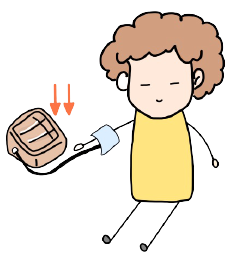
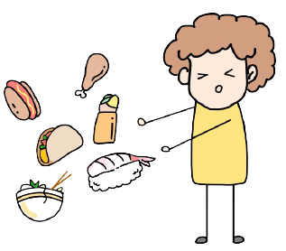
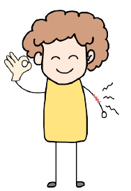
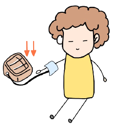
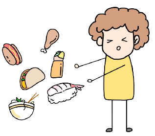
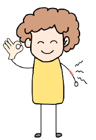

Question #1
It is 9 pm right now. Willy plans to sleep at 11 pm.
What is the best option for Willy to have a good sleep at 11pm?
Please click on the options and see if that helps Willy or not!
It is 9 pm right now. Willy plans to sleep at 11 pm.
What is the best option for Willy to have a good sleep at 11pm?
Please click on the options and see if that helps Willy or not!
"Caffeine, by virtue of blocking adenosine’s action, leads to a decrease in deep sleep, the most restful sleep. So even if you have no problem falling asleep after drinking caffeine, your sleep may not be as rejuvenating" (Shatkin and Baroni).
References
Shatkin, Jess, and Argelinda Baroni. Sleep Hygiene. 2021. PowerPoint PresentationBlue light (460-480 nm) suppresses melatonin. Melatonin is a hormone secreted by the enigmatic pineal gland in response to darkness. It modulates our sleep and wake patterns (Shatkin). Blue light in the evening would trick our brains to think it’s daytime, which inhibits the production of melatonin and decreases the quantity and quality of our sleep. Hence, minimizing the exposure to blue light could help prevent melatonin loss and fall asleep easier at the desire time.
References
Shatkin, Jess. Circadian Rhythms. 2021. PowerPoint Presentation Gunnars, Kris. “How Blocking Blue Light at Night Helps You Sleep.” Healthline, Healthline Media, 21 May 2020, https://www.healthline.com/nutrition/block-blue-light-to-sleep-better#tinted-glasses.Alcohol increases NREM and reduces REM and Stage 1 in the first sleep cycles.
References
Shatkin, Jess, and Argelinda Baroni. Sleep Hygiene. 2021. PowerPoint Presentation
References
Shatkin, Jess, and Argelinda Baroni. Sleep Hygiene. 2021. PowerPoint PresentationWilly tries to improve his sleep hygiene.
Which recommendation would you give Willy to help him improve his sleep hygiene?
We should only use the bed for sex and sleep!
This helps strengthen our brains and bodies' association between bed and sleep.
In other words, if we spend lots of time awake on bed, our brains and bodies
would associate bed with wakefulness and make us harder to fall asleep.
References
Shatkin, Jess. Circadian Rhythms. 2021. PowerPoint Presentation We should keep the room dark during sleep!
Light is a powerful zeitgeber that helps us entrain circadian rhythm and encourage feelings of wakefulness.
That's why light exposure during the evening would make us harder to fall asleep.
References
Shatkin, Jess. Circadian Rhythms. 2021. PowerPoint PresentationHaving a regular bedtime and wake time could help us maintain the timing of the body's internal clock and help us fall asleep and wake up more easily.
References
Shatkin, Jess, and Argelinda Baroni. Sleep Hygiene. 2021. PowerPoint Presentation Taking a nap(sleeping) would decrease sleep pressure,
so having a long nap may affect the ability to fall asleep at night.
Also, having a long nap would have a higher chance that sleep inertia occurs.
So if you really need to nap, make sure to keep it to 30 minutes or less to avoid sleep inertia.
References
Shatkin, Jess, and Argelinda Baroni. Sleep Hygiene. 2021. PowerPoint Presentation Willy wants to dispel a myth about sleep.
Can you help him define which option or options are myths about sleep?
The correct answer should be "All of above are myths"!
Our brains shut down during sleep is a MYTH!
"The brain remains active during sleep. Its patterns of activity change during different sleep stages, and in rapid eye movement (REM) sleep,
brain activity ramps up to a level that shares similarities with when you’re awake. Far from shutting down, shifts in brain activity during sleep are believed to be part of
why sleep is critical to effective thinking, memory, and emotional processing" (Suni).
References
Suni, Eric. “Common Myths and Facts About Sleep.” Sleep Foundation, 4 Nov. 2020, www.sleepfoundation.org/how-sleep-works/myths-and-facts-about-sleep. The correct answer should be "All of above are myths"!
A boring meeting makes us sleepy is a MYTH!
A boring meeting should not make you feel sleepy, but it may unmask sleepiness that is already present.
When our sleep debt/pressure is low, we would not feel sleepy in a boring meeting.
References
Shatkin, Jess, and Argelinda Baroni. Sleep Debt & The Effects of Sleep Loss. 2021. PowerPoint Presentation The correct answer should be "All of above are myths"!
A warm room makes us sleepy is a MYTH!
It is because our sleep debt is high that makes us sleepy, not because of the warm room
References
Shatkin, Jess, and Argelinda Baroni. Sleep Debt & The Effects of Sleep Loss. 2021. PowerPoint PresentationYes! All of above are MYTH! A warm room or a boring meeting should not make us feel sleepy. However, it might unmask sleepiness that is already present. The main reason that we feel sleepy might because our sleep pressure is high. "The brain remains active during sleep. Its patterns of activity change during different sleep stages, and in rapid eye movement (REM) sleep, brain activity ramps up to a level that shares similarities with when you’re awake. Far from shutting down, shifts in brain activity during sleep are believed to be part of why sleep is critical to effective thinking, memory, and emotional processing" (Suni).
References
Shatkin, Jess, and Argelinda Baroni. Sleep Debt & The Effects of Sleep Loss. 2021. PowerPoint Presentation Suni, Eric. “Common Myths and Facts About Sleep.” Sleep Foundation, 4 Nov. 2020, www.sleepfoundation.org/how-sleep-works/myths-and-facts-about-sleep. Willy has a delayed sleep phase disorder(DSPD). He usually wakes up naturally at 2 pm.
He wants to correct his circadian rhythm misalignment, so the doctor suggests he wakes up by the sunlight since light is a powerful zeitgeber.
It would help Willy advance his internal clock.
However, the doctor forgets to tell Willy which time he should have sunlight exposure.
Can you help Willy find the correct time to start the sunlight exposure so that he will not have sunlight exposure at the wrong time, which might actually delay his sleep phase?
7 am is incorrect! We should have light exposure after the nadir of core body temperature(CBT). Since exposure to the sunlight before CBT would actually cause the phase delay to happen. It would just be like exposure to light at night. The nadir of our CBT would usually be 2 hours before the natural time we wake up. In this case, Willy usually wakes up naturally at 2 pm, which means he would probably have the nadir of CBT at around 12 pm. So the correct time to have sunlight exposure for Willy would be the time after 12 pm.
References
Shatkin, Jess, and Argelinda Baroni. Sleep Disorders & Treatment II: Circadian Rhythms Disorders Parasomnias 2021. PowerPoint Presentation9 am is incorrect! We should have light exposure after the nadir of core body temperature(CBT). Since exposure to the sunlight before CBT would actually cause the phase delay to happen. It would just be like exposure to light at night. The nadir of our CBT would usually be 2 hours before the natural time we wake up. In this case, Willy usually wakes up naturally at 2 pm, which means he would probably have the nadir of CBT at around 12 pm. So the correct time to have sunlight exposure for Willy would be the time after 12 pm.
References
Shatkin, Jess, and Argelinda Baroni. Sleep Disorders & Treatment II: Circadian Rhythms Disorders Parasomnias 2021. PowerPoint Presentation10 am is incorrect! We should have light exposure after the nadir of core body temperature(CBT). Since exposure to the sunlight before CBT would actually cause the phase delay to happen. It would just be like exposure to light at night. The nadir of our CBT would usually be 2 hours before the natural time we wake up. In this case, Willy usually wakes up naturally at 2 pm, which means he would probably have the nadir of CBT at around 12 pm. So the correct time to have sunlight exposure for Willy would be the time after 12 pm.
References
Shatkin, Jess, and Argelinda Baroni. Sleep Disorders & Treatment II: Circadian Rhythms Disorders Parasomnias 2021. PowerPoint Presentation12 pm is correct! We should have light exposure after the nadir of core body temperature(CBT). Since exposure to the sunlight before CBT would actually cause the phase delay to happen. It would just be like exposure to light at night. The nadir of our CBT would usually be 2 hours before the natural time we wake up. In this case, Willy usually wakes up naturally at 2 pm, which means he would probably have the nadir of CBT at around 12 pm. So the correct time to have sunlight exposure for Willy would be the time after 12 pm.
References
Shatkin, Jess, and Argelinda Baroni. Sleep Disorders & Treatment II: Circadian Rhythms Disorders Parasomnias 2021. PowerPoint PresentationWilly only sleeps 4 hours per night over 2 nights. What is the physiological effect he might show?

 





"In adults, sleep restriction to 4 hours per night over 1 - 2 nights has shown an increased of heart rate" (Shatkin and Baroni).
References
Shatkin, Jess, and Argelinda Baroni. Sleep Debt & The Effects of Sleep Loss. 2021. PowerPoint Presentation"In adults, sleep restriction to 4 hours per night over 1 - 2 nights has shown an increased of blood pressure" (Shatkin and Baroni).
References
Shatkin, Jess, and Argelinda Baroni. Sleep Debt & The Effects of Sleep Loss. 2021. PowerPoint Presentation"In adults, sleep restriction to 4 hours per night over 1 - 2 nights has shown an increased of hunger and appetite" (Shatkin and Baroni).
References
Shatkin, Jess, and Argelinda Baroni. Sleep Debt & The Effects of Sleep Loss. 2021. PowerPoint Presentation"In adults, sleep restriction to 4 hours per night over 1 - 2 nights has shown a decreased of pain tolerance" (Shatkin and Baroni).
References
Shatkin, Jess, and Argelinda Baroni. Sleep Debt & The Effects of Sleep Loss. 2021. PowerPoint Presentation